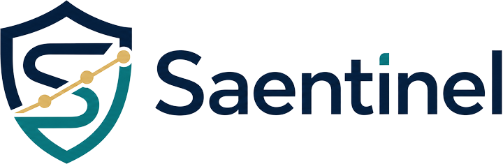

Bounded research sessions turn supplied analysis into validated findings and immutable investment cases.

Version 1.0 released
Invest with intelligence.
Govern with discipline.
Governed research, transparent reasoning, deterministic safeguards and auditable paper execution—designed to strengthen human judgment, never replace it.
Human-governed
Explainable
Deterministic
Stable software boundary · July 2026
Version 1.0 is the governed foundation.
Saentinel Version 1.0 brings evidence, reasoning, recommendations, authority and bounded paper execution into one reconstructable chain. It is a stable software release—not a production deployment or a live-trading claim.
Recommendations cannot create permission. Explicit authority and deterministic policy remain separate.
Canonical identities, immutable records and deterministic replay make decisions independently reconstructable.
What Saentinel helps you do
Move from investment question to disciplined judgment.
Saentinel turns scattered analysis into structured, challengeable and portfolio-aware decision support.
Investigate an opportunity
Organize evidence, risks, assumptions, unknowns and invalidation conditions around a potential investment.
Build a living thesis
Preserve every meaningful revision and understand why an investment case strengthened, weakened or changed.
Challenge your thinking
Seek opposing evidence, surface disagreement and prevent one model, indicator or opinion from dominating the decision.
Compare perspectives
Bring together independent analytical disciplines while keeping consensus, dissent and uncertainty visible.
Evaluate portfolio fit
Consider cash, concentration, existing exposure and owner-defined constraints before treating an idea as actionable.
Simulate before committing
Use historical backtesting and governed paper execution to evaluate behavior without submitting a real broker order.
Learn from outcomes
Connect later results to the evidence and reasoning available at decision time without rewriting the past.
Version 1.0 capabilities
Intelligence with constitutional guardrails.
Every stage preserves the distinction between analysis, recommendation, authority, execution and historical truth.
Governed research
Bounded, provider-neutral analysts work through explicit protocols while evidence and provenance remain visible.
Transparent deliberation
Investment cases preserve supporting evidence, opposing views, uncertainty, consensus, dissent and responsible abstention.
Human authority
The owner defines the mandate. Saentinel may advise, but it cannot expand its authority or weaken safeguards.
Deterministic safeguards
Policy, constraints and risk checks remain independent of AI output and fail closed when inputs are invalid or inconsistent.
Bounded paper execution
Authorized intents can enter a simulated, in-process execution sequence with exact accounting and no real broker submission.
Auditable replay
Immutable records, exact lineage and deterministic reconstruction preserve what happened without rewriting history.
Why Saentinel is different
Not another black-box opinion.
Saentinel is designed to improve the quality of judgment, not simply produce a faster answer.
Typical AI investing tool
Saentinel
Produces an answerPreserves evidence and reasoning
Hides disagreementRecords consensus, dissent and uncertainty
Treats confidence as authorityKeeps recommendation and authority separate
Optimizes for actionRecognizes restraint as a valid decision
Forgets prior reasoningMaintains immutable decision history
Places the model at the centerKeeps the owner sovereign
How it works
From evidence to accountable action.
- 01
Gather evidence
Research begins from bounded questions, explicit protocols and traceable source material.
- 02
Analyze
Replaceable analysts produce structured findings while facts, assumptions, forecasts and unknowns remain distinct.
- 03
Deliberate
Investment cases and committee reasoning preserve agreement, disagreement, uncertainty and abstention.
- 04
Recommend
Contextual recommendations explain evidence, risks, confidence and invalidation conditions.
- 05
Govern
Owner-delegated authority and deterministic policy decide whether a proposed action may proceed.
- 06
Record and learn
Paper outcomes, decision records and descriptive learning preserve history for future human review.
One investment question
One accountable record
A practical example
Suppose you are considering an investment in a company.
Saentinel can build the supporting case, identify contradictory evidence, document material risks, define what would invalidate the thesis, compare independent perspectives, evaluate the opportunity against portfolio constraints and preserve the complete decision record for future review.
- 01Frame the question
- 02Gather and challenge evidence
- 03Evaluate portfolio context
- 04Recommend, abstain or reject
- 05Preserve the reasoning
What governs Saentinel
Built around enduring principles.
Version 1.0 places disciplined stewardship and human sovereignty above technological convenience.
Integrity
Pursue truth over convenience and preserve accountability in every record.
Prudence
Place capital preservation and sustainable, risk-aware growth before speculation.
Transparency
Explain reasoning, disclose uncertainty and keep conflicting evidence visible.
Education
Help the owner become a more informed, confident and independent investor.
Roadmap
A stable governed foundation.
Built carefully for what comes next.
Version 1.0 establishes the reviewed software boundary. Future capability remains subject to the same owner authority, deterministic safeguards and evidence standards.
Version 1.0 foundation
Governed research, committee reasoning, decision records, deterministic paper execution and replay verification.
Operator experience
Usability, portfolio intelligence and decision-quality tools that make the governed platform easier to evaluate and operate.
Controlled connectivity
Production and brokerage capabilities only after separate authorization, infrastructure validation and explicit safety review.
Version 1.0 boundary
Stable does not mean autonomous.
Saentinel Version 1.0 does not provide live trading, real broker submission, production activation or evidence of profitability. Its governed execution path is bounded, simulated and intentionally separate from any autonomous trading loop.